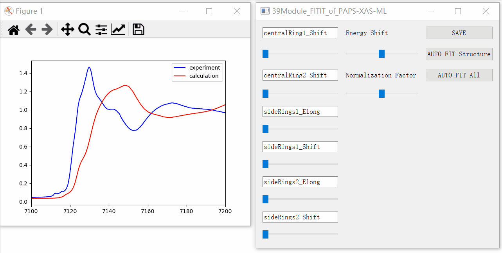

QTFITIT(39QTFITIT)使用说明
QTFITIT作为我们软件框架下的39模块实现”从参数到谱”的机器学习模型。 QTFITIT基于机器学习和可解释性机器学习进行XANES分析与XANES拟合。 用于机器学习的数据集，可基于我们软件框架下的31-35模块构建， 也可由使用者自行构建。
1 安装
主要依赖Python库
numpy,scipy,matplotlib,sklearn,PyQT,nlopt。其中nlopt之外均为常用python库。
pip安装和whl安装
pip install QTFITIT 加速安装 pip install QTFITIT -i https://pypi.tuna.tsinghua.edu.cn/simple pip install QTFITIT-0.1-py3-none-any.whl
源码安装
直接解压缩即可使用。如果遇到库依赖问题。建议使用pip安装方式，由pip解决库依赖。 后续会提供simple版本使用极简python库依赖的原则减少库依赖问题。
安装后生成文件
在python环境的Lib\site-packages下生成使用例子。 例如python环境为”C:\Users\zhanfei\miniconda3\envs\test1”时， “C:\Users\zhanfei\miniconda3\envs\test1\Lib\site-packages”下面生成QTFITIT_example_XXX文件夹。
例如QTFITIT_example_Fephen3，即为Fe(phen)3配合物的应用实例文件夹。
2 GUI运行说明
打开命令行，转到工作目录。目录中有input.txt文件，输入QTFITIT命令即可运行。 input.txt文件第一行有效，指明了QTFITIT运行所需的参数文件名。
GUI滑块功能
根据参数文件中设置的结构参数数量(npar),GUI生成npar个滑块，通过改变滑块，显示参数改变后的机器学习
重构XANES。按SAVE按钮保存当前计算谱和实验谱到文件output_exp_reconstruction.txt。

GUI拟合功能
基于优化方法和”从参数到谱”机器学习模型，进行XANES拟合。 
3 输入文件
输入文件有两个input.txt文件和参数文件。其中input.txt文件位于程序运行目录下指明参数文件位置，参数文件可以不再运行目录下。
input.txt(QTFIT输入文件路径)
包含QTFITIT参数文件的路径。以”QTFITIT_example_Fephen3”为例。 在”QTFITIT_example_Fephen3”文件夹中运行QTFITIT时input.txt内容为： input_Fephen3.txt
在上层目录site-packages下运行QTFITIT时，input.txt位于site-packages。内容为： QTFITIT_example_Fephen3/input_Fephen3_from_parent_directory.txt
参数文件(即input.txt中指定的输入文件)
以input_Fephen3.txt为例说明输入文件。
字符串和数值参数格式 关键词$输入参数$
file_energy$Fephen3_Energy.txt$ input file name of energy(eV)
file_x$Fephen3_bond_3ligand.txt$ input file name of parameters
file_y$Fephen3_xmu.txt$ input file name of X-ray absorption spectra
file_exp$Fephen3.exp$ input file name of experiment spectrum
fmodel$tmp.pkl$ input file name of machine learning model XXX.pkl
e1$7100$ plot Energy range from e1 to e2,
e2$7200$ plot Energy range,for instance Fe XANES from 7100eV to 7200eV
norm$1$ normalization factor,in this FDMNES example is 33.
npar$3$ structure parameter number
列表和数组参数格式 关键词$参数1,参数2,参数3$
par_a$1.8,1.8,1.8$ structure parameter lower bound, float array of size npar
par_b$2.2,2.2,2.2$ structure parameter upper bound, float array of size npar
x0$2.0,2.0,2.0$ structure parameter initial value, float array of size npar
par_name$Phen1_Shift,Phen2_Shift,Phen3_Shift$ structure parameter name, string array of size npar